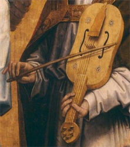
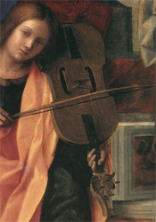
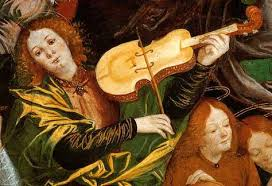

L'idée de tirer des sons d'un ensemble de cordes tendues remonte à l'Antiquité : Apollon ou Orphée, pour ne retenir que des exemples myth(olog)iques connus, pinçaient les cordes de leur lyre depuis l'Olympe ou les Enfers. L'idée de faire vibrer ces cordes par frottement au moyen d'un archet est plus récente et on en cherche généralement l'origine au Moyen-Orient. La formule a gagné l'Occident à la faveur des invasions mauresques, des échanges commerciaux et sans doute des Croisades et elle y a fait fortune au terme de 500 ans d'une recherche patiente.
On imaginerait volontiers que les progrès scientifiques qui ont caractérisé la Renaissance ne furent pas pour rien dans cette ascension vers le niveau de perfection acoustique que l'on sait mais les faits démentent cette supposition, d'ailleurs le violon a trouvé ses caractéristiques idéales à une époque (vers 1600) où l'acoustique physique n'était encore nulle part. C'est aux recherches empiriques d'artisans méticuleux que l'on doit la réponse idéale au problème posé de tirer le meilleur parti d'une corde et d'un archet. La Science n'est venue qu'après et elle a dû se contenter d'entériner une solution aboutie.
Cette chronique est un mélange d'histoire organologique et d'acoustique mathématique. Ces points de vue se complètent et se rejoignent évidemment mais le lecteur qui ne se sentirait à l'aise qu'avec un seul des aspects traités peut parfaitement ignorer l'autre en sautant les paragraphes qu'il jugerait trop techniques.
Rebec

Vièle à archet

Lira da braccio
Le rebec est sans doute la forme occidentalisée du rebab arabe qui a accompagné les Maures, en Espagne, dès le 11ème siècle. Il s'est répandu en Europe occidentale vers 1100. Aucun instrument ne nous étant parvenu, nous n'en connaissons quelques caractéristiques qu'au travers de commentaires et d'illustrations figurant dans des manuscrits d'époque. Creusé dans la masse d'un seul bloc de bois, sa caisse présente la forme d'une demi-poire dont la face plane est percée de deux ouvertures en forme de C qui se regardent. Les cordes, en nombre variable de 2 à 4, sont en boyau, un progrès certain par rapport au modèle oriental qui utilisait des fils de soie.

Violon (Ferrari)
Le premier traité illustré d'organologie (Harmonice musices Odhecaton) est paru à Venise, en 1501, chez l'éditeur Ottavino Petrucci. Il détaille pour la première fois les nombreuses variantes instrumentales existantes, se différenciant, en particulier, par la taille (donc la tessiture) et par le port (Posé sur les cuisses, coincé entre les jambes, tenu en bandouillère sur la poitrine, posé sur la clavicule ou sur l'épaule). Le violon auquel nous pensons commence effectivement à se dessiner dans la peinture italienne du début du 16ème siècle mais il porte encore le nom de viola da braccio. Cette appellation réfère au mode de jeu de l'instrument, porté sur l'épaule par opposition à la viola da gamba qui se tenait entre les jambes. Le principe de l'instrument définitif est désormais acquis, il ne sera désormais plus question que de perfectionnements.
Il importe de réaliser que les progrès qui ont été enregistrés entre 1500 et 1700 n'ont rien dû à la science. De science il ne pouvait être question : l'acoustique physique était inexistante à cette époque et le violon a été parfait bien avant que les scientifiques aient pu émettre un avis circonstancié à leur sujet. On sait aujourd'hui, grâce à des études comparatives menées sur des générations successives d'instruments (plus de 200 !) que chaque facteur a recopié les instruments antérieurs dans les limites de la précision de son savoir-faire. Un pourcent d'écart dans les mensurations n'était pas rare mais ces artisans eurent l'intelligence de comparer les performances des variantes obtenues jusqu'à ne garder que celles qui donnait la meilleure satisfaction. C'est par cette succession d'essais et d'rreurs que la génétique instrumentale a progressé jusqu'à produire des formes certes parfaites mais parfois étranges en tous les cas inattendues. Cela est tellement vrai qu'actuellement la science déductive demeure largement impuissante à expliquer pourquoi le violon possède cette forme particulière, pourquoi les ouïes sont telles que nous les connaissons, etc.
L'instrument mérite enfin le nom de violon au sens moderne du terme : il a acquis sa forme quasiment définitive d'où il ne subira plus que des améliorations mineures davantage destinées à en renforcer l'intensité du son que sa beauté.
Au-delà, l'instrument a certes continué d'évoluer en performance mais nullement en perfection. On considère en effet que l'état d'achèvement atteint par l'école de Crémone a frisé la perfection acoustique. Les perfectionnements ultérieurs n'ont concerné que la recherche d'une plus grande intensité sonore, réclamée par la fréquentation de salles de concerts de plus en plus grandes, et celle d'une plus grand stabilité de l'accordage, quelles que soient les conditions de température et d'hygrométrie de ces salles.
est (avec le piano) l'intrument-roi de la musique savante occidentale. Il est apparu en Occident, lors des premières invasions musulmanes, sous une forme primitive encore très éloignée de celle que nous connaissons aujourd'hui. Aucun instrument de ces époques lointaines soit pour faire simple antérieures à 1300 ???, ne nous est parvenu pas même en pièces détachées. Tout ce que nous en savons repose sur une iconographie imprécise ne permettant pas d'aller très loin dans la description des évolutions subies par l'instrument et encore moins de ses performances acoustiques. Ce que nous en dirons, pour vraisemblable qu'il paraisse, demeure donc sujet à débat. Le premier recueil qui nous soit d'une aide véritable date des années 1300, c'est mais il est clair que l'instrument a déjà subi maintes transformations.
L'autre extrémité de l'échelle du temps se situe à l'époque baroque aux plus beaux jours de l'école de Crémone. Les dates ne sont pas mentionnées par coquetterie, elles imposent d'emblée un ensemble de considérations auxquelles on ne s'attendrait pas forcément. En 1600, l'acoustique physique, au sens moderne du terme, n'était encore nulle part. Il est donc parfaitement vain de tenter de justifier l'état de perfection de l'instrument par la mise en pratique, par ses constructeurs, de règles inconnues que la physique n'a dégagées que bien plus tard. Il n'y a qu'une seule explication possible : les luthiers de cette époque ont travaillé à l'intuition, guidés par un ensemble d'essais et d'erreurs corrigées jusqu'à ce que le résultat ne puisse plus être amélioré de cette façon. Le plus étonnant est que la science n'ajoutera rien de plus : elle se conentera d'observer l'instrument parfait en l'état sans être en mesure d'expliquer les raisons de la facture idéale trouvée ni de proposer la moindre amélioration.
Le violon en cet état idéal pose pourtant toutes sortes de questions à un observateur naïf auxquelles cette modeste chronique tente de répondre.